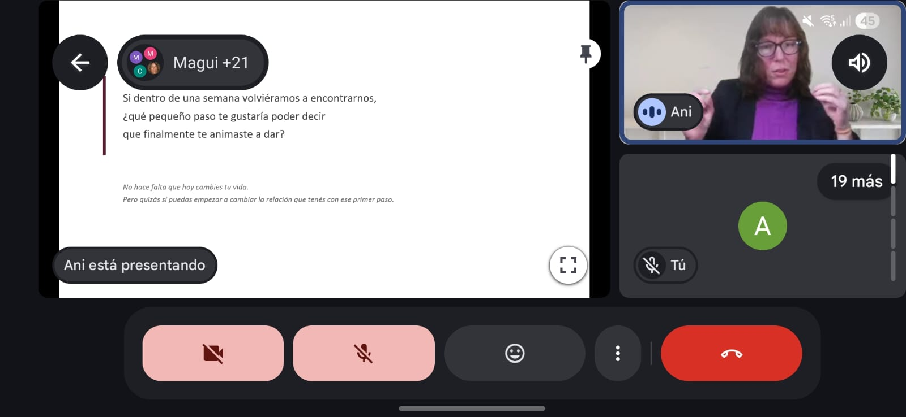

01 / RECONOCER
Autoconocimiento
Mirar con honestidad qué está pasando: pensamientos, emociones, deseos, necesidades y patrones. Poner en palabras lo que quizás todavía se siente confuso.
¿Qué necesito reconocer de mí hoy?
Acompaño procesos de transformación para que puedas reconocerte, comprender qué te condiciona y elegir cómo querés vivir.
Un espacio para dejar de responder solamente a lo que creés que deberías hacer y empezar a escuchar lo que realmente querés.
Acompaño a personas, equipos y organizaciones a través de procesos individuales, talleres, consultoría y formaciones.

“No se trata de convertirte en alguien más, sino de vivir cada vez más cerca de quien sos.”
Volver a vos puede empezar en cualquier lugar de tu vida: una decisión, un vínculo, el trabajo, tus hábitos, la alimentación, un cambio inesperado o esa sensación de que algo ya no encaja. No hay un único tema ni un único punto de partida.
Tres movimientos que acompañan el camino desde el autoconocimiento hasta una manera más coherente de vivir.
Mirar con honestidad qué está pasando: pensamientos, emociones, deseos, necesidades y patrones. Poner en palabras lo que quizás todavía se siente confuso.
Trabajar sobre cargas emocionales, creencias y condicionamientos que pueden estar influyendo en tus decisiones. Hacer espacio sin pelear con tu historia.
Llevar lo comprendido a la vida cotidiana: nuevas formas de sentir, pensar, comunicarte, decidir y actuar, con pasos posibles y propios.
Podés comenzar por una situación puntual o transitar un proceso más profundo, de forma individual, grupal o con tu organización. La modalidad y el recorrido se definen según el momento y el objetivo.
Un espacio personalizado para mirar eso que hoy te moviliza, comprender qué está influyendo y encontrar nuevas maneras de abordar tu situación. Puede tratarse de algo cotidiano o de un cambio importante en tu vida.
Una propuesta vivencial online de cuatro encuentros semanales para explorar la relación con tus emociones y desarrollar una escucha más consciente.
Cupo mínimo: 10 personas · Inversión total: USD 45
Conocer Sentir desde AdentroPropuestas a medida para empresas, instituciones educativas y organizaciones que quieren acompañar a sus personas en procesos de cambio, liderazgo y bienestar. Con el mismo enfoque de siempre: volver a uno mismo para vincularse y trabajar mejor con otros.
Modalidad, duración e inversión según cada propuesta.
Consultar propuestaSoy Anabella, Ani Franza M. Nací en Córdoba, Argentina. Mi recorrido personal y formativo me llevó a explorar distintas maneras de comprender lo que nos pasa y cómo construimos nuestra forma de vivir.
Hoy acompaño procesos desde una mirada integradora, donde lo emocional, lo mental, lo corporal y la dimensión personal se relacionan. No desde respuestas hechas, sino desde la escucha, la exploración y el trabajo que cada persona necesita.
Creo en los procesos reales, en el respeto por los tiempos propios y en la posibilidad de elegir con mayor conciencia.
“Soy solo un alma humana, acompañando a otra alma humana.”
Si querés conocer mi manera de abordar estos temas antes de comenzar un acompañamiento, podés acceder a este recurso gratuito.
Una propuesta formativa disponible en YouTube para iniciar tu propio recorrido de exploración.
Además del acompañamiento individual, facilité espacios formativos y vivenciales para instituciones, grupos y distintos públicos. Algunas experiencias de mi recorrido:

Espacios online de exploración y aprendizaje sobre desarrollo personal.

Experiencia vivencial realizada en ámbito universitario UNC - FCEFyN para EAAPJ (Encuentro Aeroespacial para Jóvenes).
Un encuentro orientado a explorar el propósito en esta etapa de la vida.
No hay nuevos talleres con fecha confirmada por el momento. Si hay una temática que te gustaría explorar en un espacio grupal, podés compartir tu propuesta. Me interesa conocer qué temas necesitás y qué te gustaría trabajar.
Testimonios de personas que realizaron sesiones individuales de acompañamiento con Ani.
Los testimonios se comparten con autorización de quienes los brindaron.
No necesitás tener todo resuelto ni saber exactamente por dónde empezar. Contame qué estás buscando, para vos, tu equipo o tu organización, y vemos juntos cuál es la mejor forma de acompañarte.
Escribime por WhatsApp


.png)